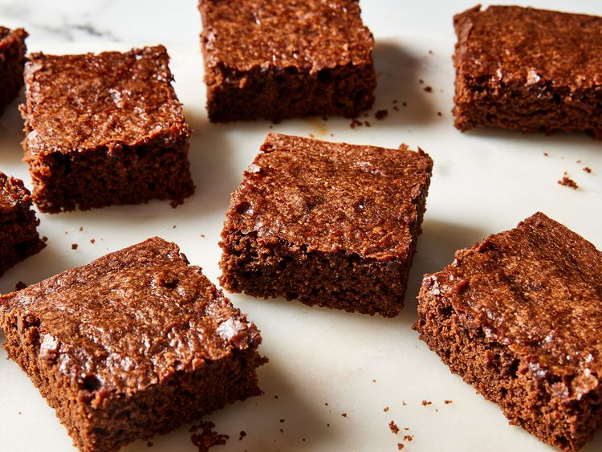

Vegan Brownie

Description
These vegan brownies are made with cocoa powder for a rich and gooey chocolaty treat.
If you prefer brownies that are a little more solid, you can bake the brownies for longer than the recommended time. Great for people with egg or dairy allergies, too!
Ingredients
These are the ingredients you'll need to make this homemade vegan brownie recipe:
- Flour: This vegan brownie starts with all-purpose flour
- Sugar:Make sure the package is labeled "vegan", as some store-bought white sugars aren't strictly vegan
- Cocoa Powder:You'll need ¾ cups of good-quality unsweetened cocoa powder
- Baking Powder:Baking powder acts as a leavener, which means it helps the vegan brownies rise
- Salt:Salt enhances the overall flavor of the brownies, but it won't make them taste salty
- Water or Coffee:Use a cup of hot water (or a cup of brewed coffee for more flavor)
- Oil:Vegetable oil keeps these vegan brownies nice and moist
- Vanilla: Vanilla extract takes the flavor up a notch
Steps
Here's a brief overview of what you can expect when you make this shortcut pesto pasta:
- Gather all ingredients. Preheat the oven to 180 degrees C. Grease a baking dish with baking spray
- Whisk flour, sugar, cocoa powder, baking powder, and salt together in a large bowl until combined
- Pour in water (or coffee), vegetable oil, and vanilla; mix until well-blended. Spread batter evenly in the prepared dish
- Bake in the preheated oven until top is no longer shiny and center feels just set when gently pressed, about 30 minutes
- Let cool for at least 10 minutes before cutting and enjoy!